AIWA （アイワ）/EXCELIA (エクセリア)
1951年創立のカセットデッキを得意としたオーディオメーカー。カセットに関しては、国内有数の歴史を誇るメーカーであり、主流となったフィリップス社の規格が公開される以前に独自規格のカードリッジ式テープレコーダーを開発していた。またフィリップス社の規格が公開された後に、その規格によるカセットレコーダーを我が国で最初に発売したのも同社である。しかしメーカーとしては1969年にソニーによる資本提携を受け、2002年に完全子会社化し、2008年にはブランドとしても消滅している。（＊）
ヘッドフォンについては1970年代中盤から自社ブランドの製品を販売していた。基本的にこのころにはすでに低〜中価格品中心のブランドとなっていた。その為1980年代に入り小型・軽量化がトレンドとなると非常に短いサイクルでモデルチェンジを繰り返す。しかしその中でカーボンフラット振動板や、全長60�oものロングパイプを使用したインナーイヤー型など独自の製品も販売していた。またブランド末期の製品は全体的には低価格だが、使用されていたドライバーが価格の割に良質なので改造のベース機となっていた。
なお1980年代末に、一時同社の中の高級品について「EXCELIA（エクセリア）」ブランドで販売していた時期があり、このブランドのヘッドフォンも存在する。
＊2017年2月にソニーから、「AIWA」ブランドの商標が、十和田オーディオに譲渡され、同年4月に「アイワ株式会社」が設立された。
AIWA
（アイワ）の製品を以下のように分類する。（この分類は個人的な意見で、メーカーの分類ではありません）
�T.1970年代のモデル
ソニーのMDR-3等による小型・軽量化の流行以前のモデル。「HP」の型番と数字のみでネーミングされたモデル。オープンエア型で展開していた。HP-100はヘッドバンドのない聴診器型、この延長で完全な耳掛け型としたのがES-10P。HP-500はこの時代のフラグシップモデル、動電全面駆動型で振動板の構造はFOSTEXのRP方式のようだ。
HP-20 HP-30 HP-100 （動電全面駆動型） HP-500
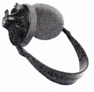 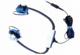 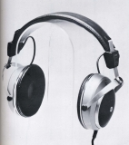
�U.1980年代以降のモデル
1980年代になりソニーのMRD-3に端を発した小型・軽量機ブームの中で、アイワの製品はこの路線の製品（HP-Aシリーズなど）が続く。やがて小型軽量機に変わりインナーイヤー型がポータブル用途の主流となった1990年代から廉価な中型機（HP-Xシリーズの後期モデル等）も発売するようになった。
�@HP-Aシリーズ
低価格の折りたたみ型で始まったシリーズ。「A」はシリーズ名の「Audio
Cologne（オーディオ・コロン)」が由来か？
HP-A2S HP-A5
HP-A30 HP-A50
HP-A33 HP-A55
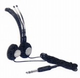 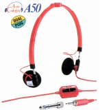 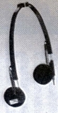
HP-A100 HP-A101 HP-A202 HP-A303 HP-A505 HP-A606
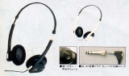
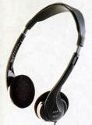
HP-A120 HP-A360
HP-A171
HP-A071 HP-A081 HP-A181
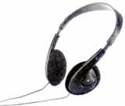 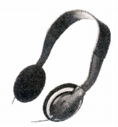
(HP-AVシリーズ他） HP-AV370 HP-AV570
(防滴仕様）
HP-AS188
(フリーアジャスト型) HP-A371
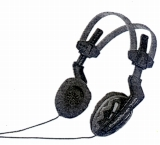
�AHP-Sシリーズ
通常の小型軽量機
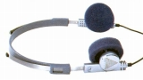
�BHP-Tシリーズ
折りたたみ型の上級機のシリーズ。「T」は「テクノロジー」の略のようだ。HP-T5の広告には「Tecchnology
5」と記されている。
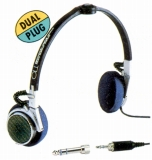
�CHP-Vシリーズ
インナーイヤー型のシリーズ。共通のドライバーを用いた折りたたみ型とのコンバーチブルモデルを含む。HP-V99はアイワらしからぬ高級インナーイヤー型。60�oものダクトパイプを持つユニークな機種。通称「パイプホン」。
HP-V1 HP-V2 HP-V3 HP-V7 HP-V8 HP-V9
HP-V10 HP-V11 HP-V12 HP-V15 HP-V17 HP-V20 HP-V30 HP-V50
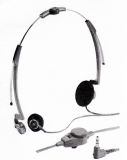 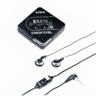
HP-V22 HP-V33 HP-V35 HP-V55 HP-V66 HP-V77 HP-V88 HP-V99
HP-V541 HP-V741
HP-V041 HP-V051 HP-V061 HP-V091
HP-V151 HP-V161
HP-V551
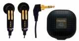 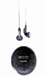 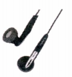
�DHP-Xシリーズ
HP-Tシリーズの後の上級機のシリーズ。
（Preciousシリーズ）
HP-X5 HP-X8 HP-X10
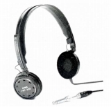
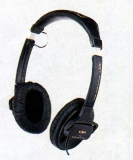
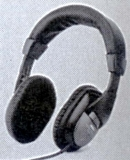
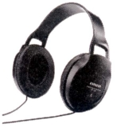
HP-X111 HP-X211 HP-X311
HP-X222
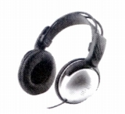
(フリーアジャスト型) HP-XF215
�Eその他
耳掛け型
ES-10P
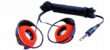
HP-Jシリーズ
バーチカル型のシリーズ。HP-J7はインナーイヤー型、HP-JS307は夜間の野外使用に便利な識別用LED内蔵機種。
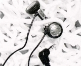
HP-D/Sシリーズ
HP-Vシリーズと別のインナーイヤー型。「パイプホン」の流れを汲む機種のようだ。Sシリーズは50cmコードの機種。S300及びD300は従来の16�o径から13.5�o径にサイズダウンした機種のようだ。
HP-D1 HP-D2 HP-D5 HP-D6 HP-D8 HP-D9
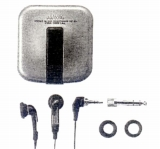
HP-S2 HP-S300
(リモコン対応型） HP-S400
＊その他にパイプフォンベースのリモコン付きモデルで、HP-Rシリーズが存在する。
無線機
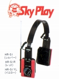
ステレオイヤホン
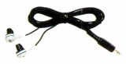
�V.EXCELIA（エクセリア）ブランドのモデル
EXCELIA（エクセリア）は久々のヒットモデルとなったカセットデッキ「XK-009」に代表されるアイワの上級ブランド。ただし価格的には他社の中級品クラスであった。カセットデッキの他にCDプレイヤー(XC-005等）やDATデッキ（XD-001等）などがあるが、ヘッドフォンも2機種用意されていた。HP-X80に採用したカーボンファイバー振動板を採用した大型密閉型である。上級機HP-EX200はアイワ唯一の2万円超のモデル。
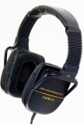